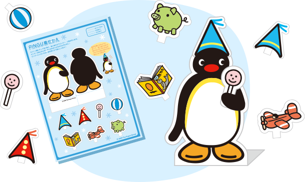
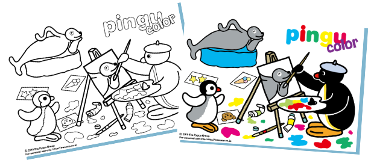

Put a hat on Pingu. Or give him a candy. Let's dress up Pingu as you like!

What color is Pingu's beak? How about Robby's body? Let's print out and have fun coloring!
Please print out before playing this Craft-Work. To print out, you must have 'Adobe Reader' software.